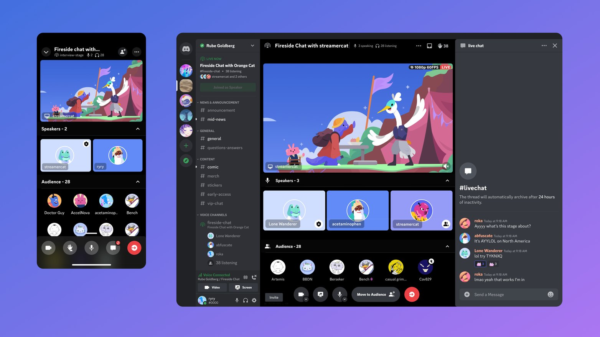
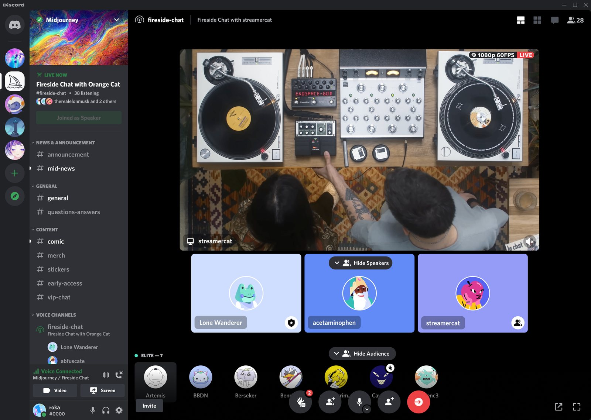
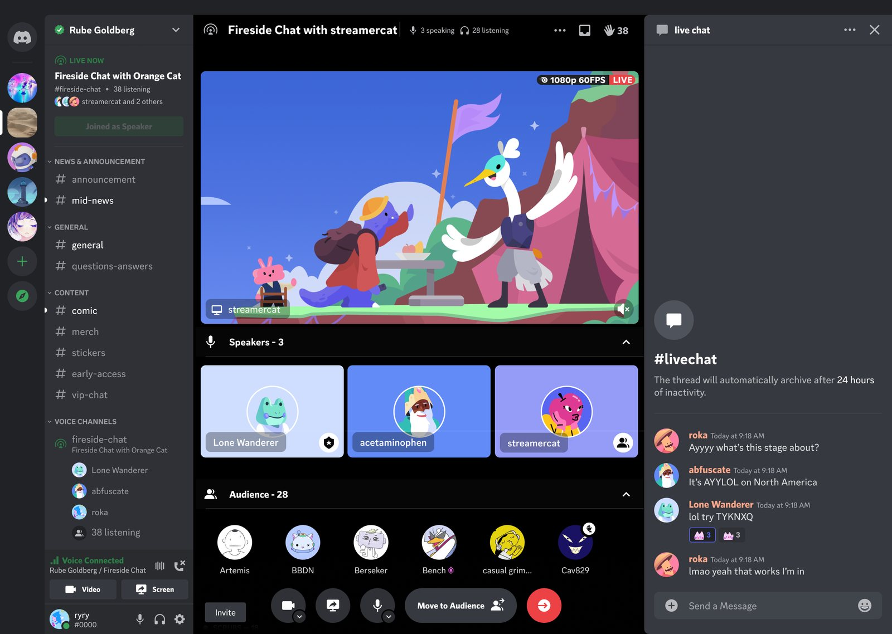

Stage Channels
Voice channels at Discord were limited by the total audience they could accommodate, and were missing key features that would help streamers run larger events.
The goal: ship a new channel type that lets multiple speakers and viewers join a broadcast at any time, with more controls for speakers and audience, for gaming and entertainment communities.
Shipped in 2023 and became one of the most commonly used channel types on servers with over 50k members.

[A sentence on the desktop stage: the live stream, speakers on stage, and the audience below.]

[A sentence on pairing the stage with live chat.]

[A sentence on joining and watching a stage on mobile.]
More UX research
Learning more about different creators and server admins helped us refine the needs for stages. It wasn’t just a streaming product for games.
Keeping it lively
Letting people know when the audience grows or when someone jumps on stage keeps things engaging for viewers.
The chat is the entertainment
People watch the chat as much as the video or speakers, so all the reactions and chat features had to work just as well.